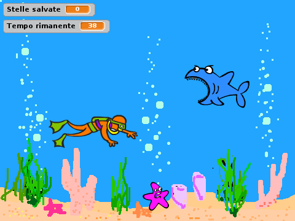
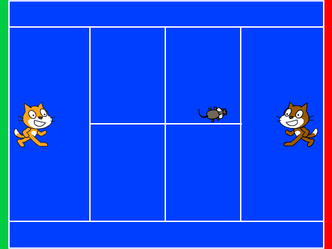
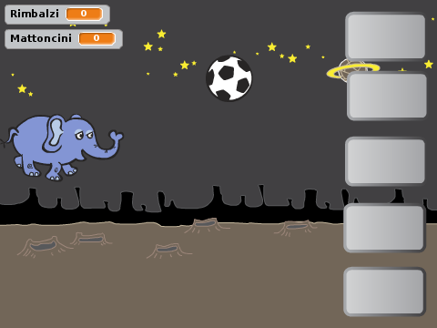
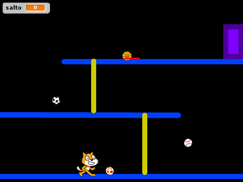
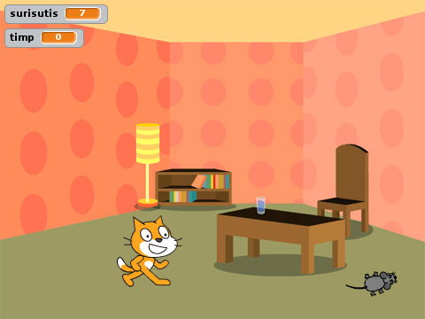
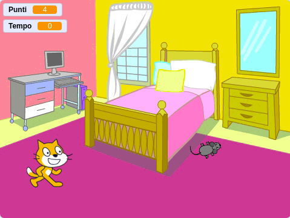
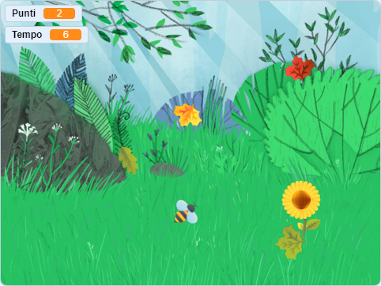

risorse | scratch al coderdojo
Alcuni progetti preparati in occasione degli incontri di CoderDojoFVG.
Aiuta la scimmietta a raccogliere la frutta prima che cada a terra. Guadagni un punto per ogni frutto raccolto. Scansa gli oggetti non commestibili e il pippistrello, se li tocchi perdi la partita!
Progetto Scratch 2.0: pioggia-di-frutta.sb2.
La scaletta in formato testo e PDF.
Usato per un ciclo di quattro Dojo@School dedicato alle classi terze di una scuola primaria.
Raccogli quante più stelle marine puoi. Stai lontano dallo squalo affamato che apparirà!
Progetto Scratch 2.0: mondo-sommerso.sb2.
La scaletta in formato testo e PDF.
Dojo@School per ragazzi di terza media ospitato dall'ITI A. Malignani.
Gioca a tennis contro Scratch!
Progetto Scratch 2.0: tennis.sb2.
La scaletta in formato testo.
La fantasia dei ragazzi ha snaturato l'idea originale. Il gioco finale è diventato un gioco per un unico giocatore, stile Arkanoid, ma orizzontale:
Progetto Scratch 2.0: lunar-noid.sb2.
Un progetto più complicato del solito per un CoderDojo “avanzato”.
Raggiungi l'uscita in alto a destra arrampicandoti sulle corde. Salta le palle ed evita il laser!
Progetto Scratch 2.0: salta-palla.sb2.
La scaletta in formato testo e PDF.
Progetto sviluppato per un workshop per insegnanti di lingua friulana nel contesto dell'evento Marilenghe & Mariscuele 2017.
Aiuta Scratch a catturare i topolini che infestano il suo salotto!
Progetto Scratch 2.0: surisutis.sb2.
La scaletta in formato testo e PDF.
Attraversa la strada, recupera il pallone e riportalo a Nano!
Progetto Scratch 2.0: attraversa-la-strada.sb2.
La scaletta in formato testo.
È il progetto “surisutis” sviluppato in italiano con Scratch 3.x.
Progetto Scratch 2.0: topolini.sb2.
Progetto Scratch 3.0: topolini.sb3.
La scaletta in formato PDF.
Studio per un CoderDojo in fase di definizione, incentrato sul tema dei prati stabili.
Aiuta l'ape a raccogliere più polline possibile prima che arrivi l'inverno!
Progetto Scratch 3.0: prati-stabili.sb3.
La scaletta in formato testo e PDF.
Archivio contenente gli sprite: prati-stabili-sprites.zip.
Disegni originali di Freepik, tratti da www.flaticon.com.
Pagina modificata il 01/11/2019